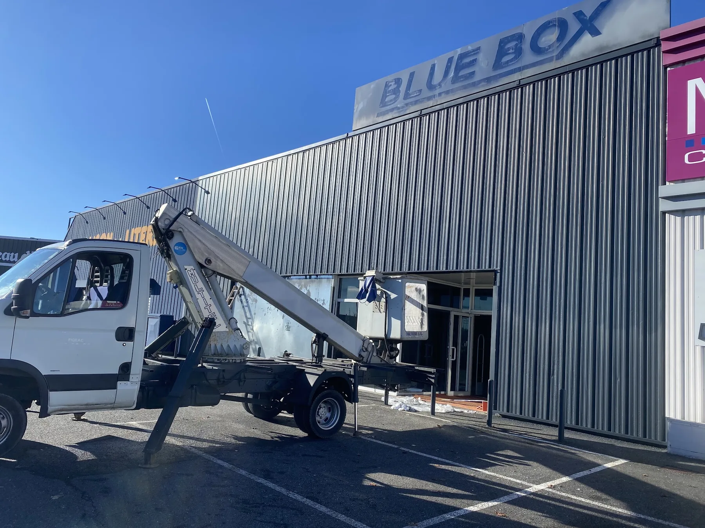
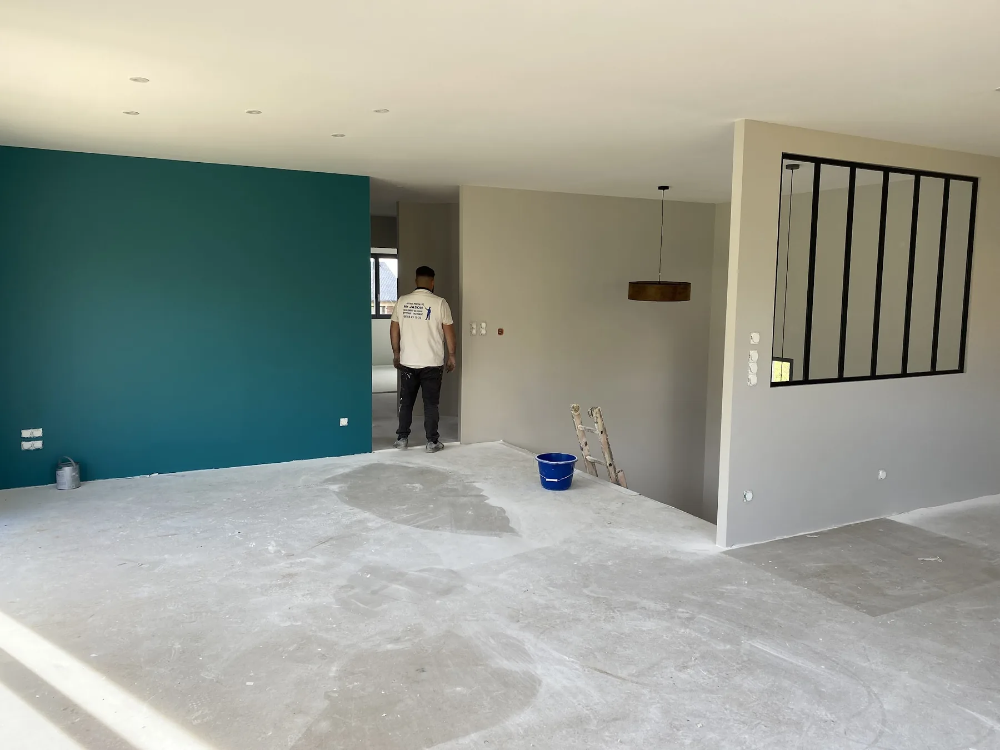
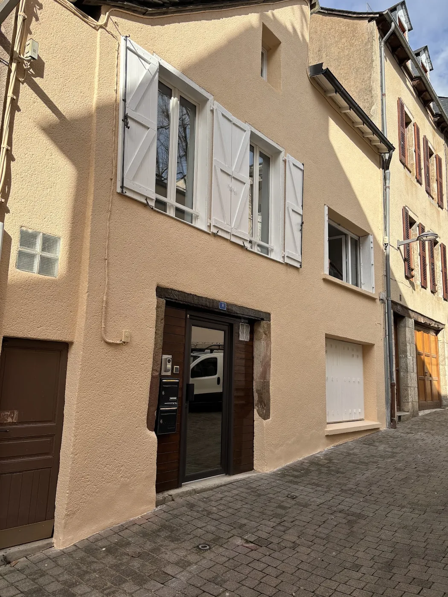
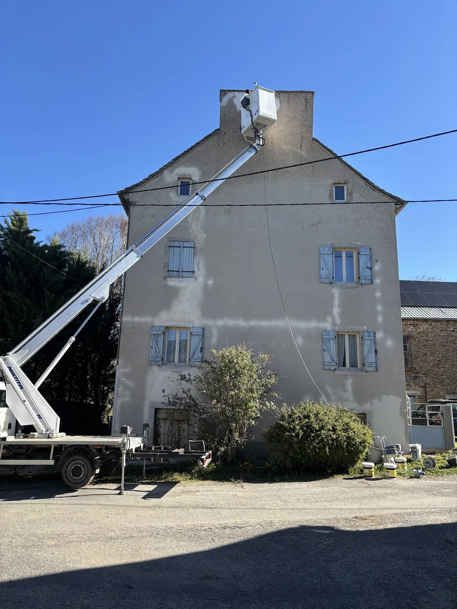
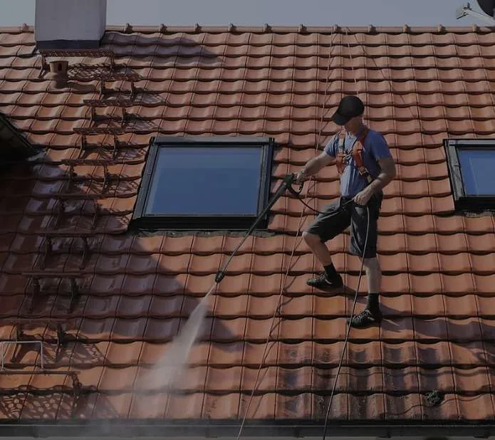
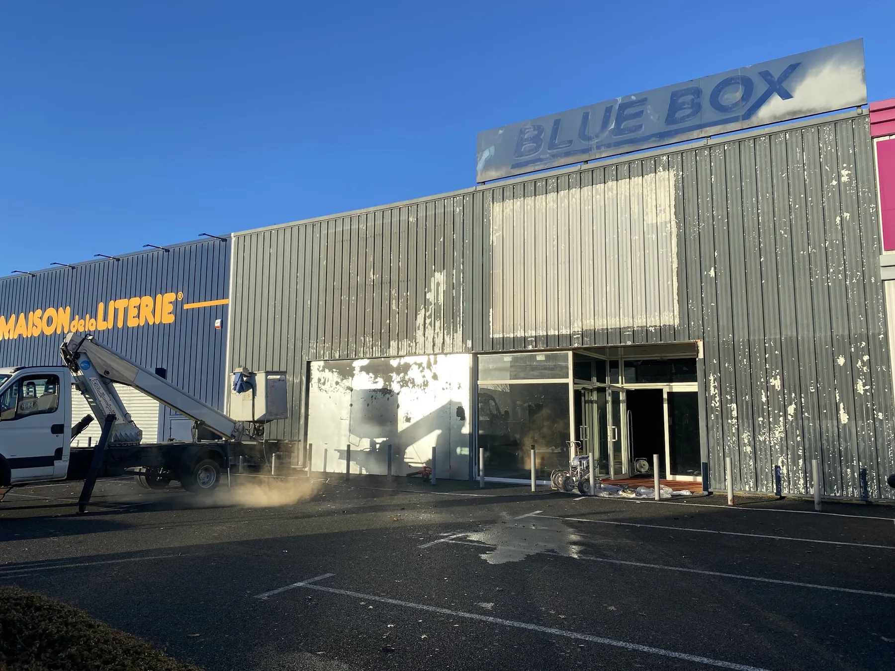
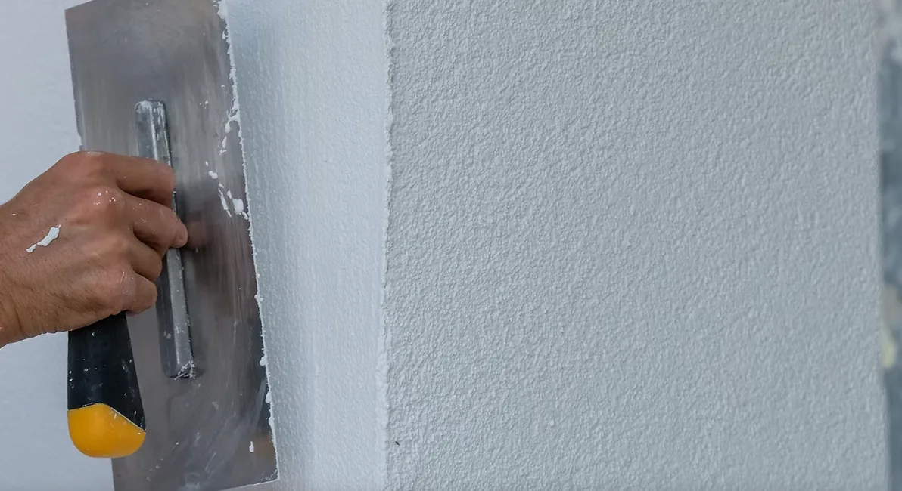
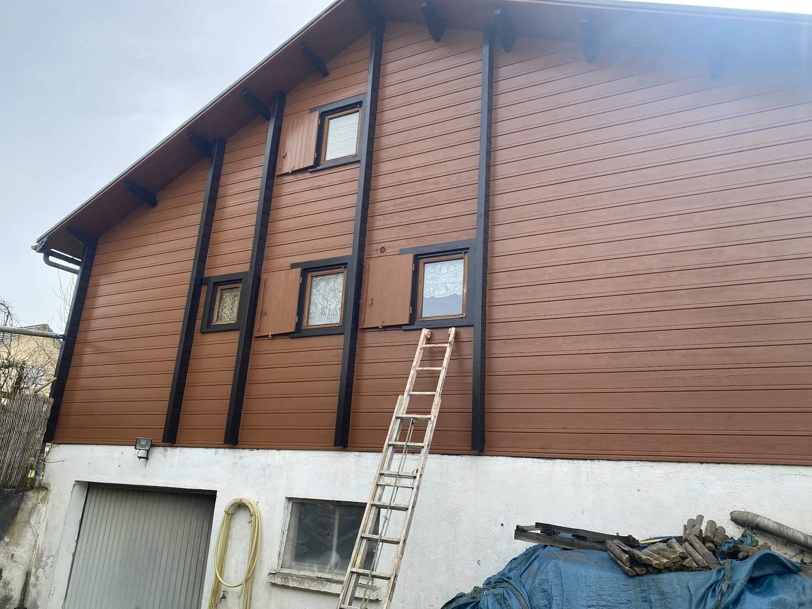
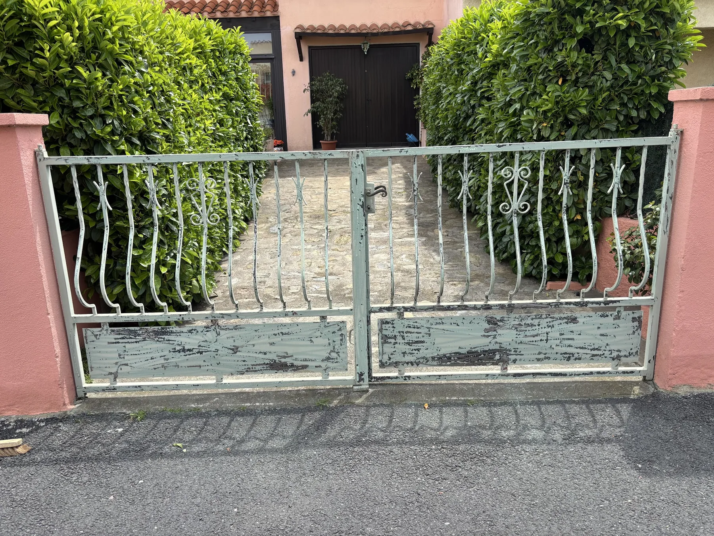
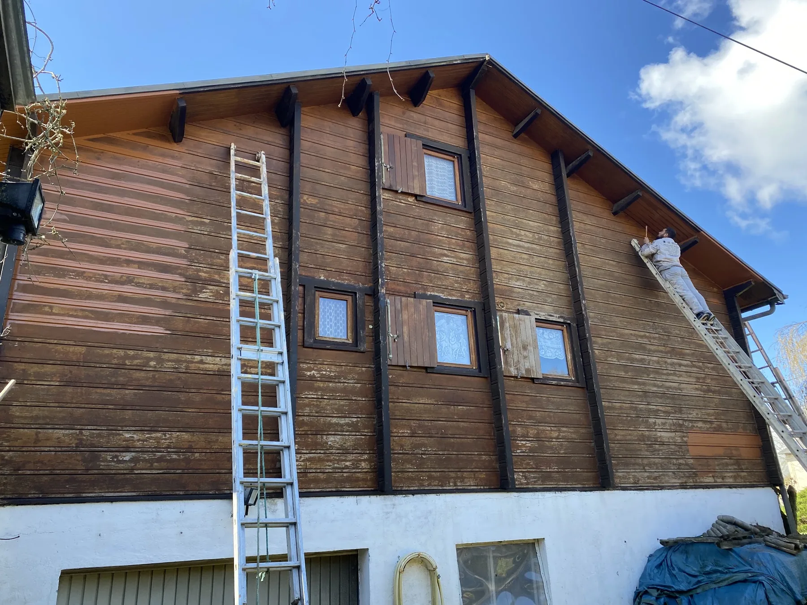

Peinture intérieure
Rafraîchir, harmoniser ou transformer les pièces de votre habitation avec un travail de peinture pensé pour un rendu propre et cohérent.
Peinture intérieure et extérieure, ravalement, rénovation, nettoyage de façades et démoussage de toitures : Technic Façades 12 accompagne vos projets à partir d’Olemps.


Les avis disponibles reviennent régulièrement sur la qualité du travail, la réactivité, l’écoute et le soin apporté aux chantiers.
Une seule adresse pour vos travaux de peinture, de façade, d’entretien extérieur et de rénovation.
Rafraîchir, harmoniser ou transformer les pièces de votre habitation avec un travail de peinture pensé pour un rendu propre et cohérent.

02Remettre en valeur les murs extérieurs et protéger visuellement les surfaces exposées au temps et aux intempéries.
Redonner une lecture nette et homogène à la façade grâce à des travaux de rénovation et de finition adaptés au projet.

04Retirer les salissures qui ternissent l’aspect extérieur avant un traitement ou une rénovation plus complète si nécessaire.

05Entretenir la toiture en éliminant mousses et encrassements visibles afin de retrouver une couverture plus propre.

AvantAprèsFaites glisser le curseur pour comparer deux étapes d’un même chantier de façade. Les photos du site sont issues des réalisations fournies pour Technic Façades 12.




Les témoignages ci-dessous sont repris tels qu’ils ont été fournis depuis la fiche Google Business de l’entreprise.
“Disponible. Rapide et efficace. Travail soigné. Artisan à l'écoute des demandes et bons conseils. Je recommande.”
“Très bon travail Monsieur jazon un professionnel irréprochable.”
“Complètement satisfaite des travaux effectués par Monsieur Jason. Travail sérieux, réactif, professionnel, soigné. À l’écoute des demandes. Je recommande +++”
“Très pro, réactif, à l'écoute, travail soigné, rapide et propre. Bons produits utilisés, le rendu des peintures intérieures est tel que je l'espérais. Je recommande +++ ! Merci Jason”
“Gentillesse et efficacité. Je recommande :)”
Technic Façades 12 prend en charge les travaux de peinture intérieure et extérieure, le ravalement, le nettoyage et la rénovation de façades, ainsi que l’entretien des toitures.
L’entreprise indique utiliser des produits de qualité tels que Zolpan et Séguret et met en avant un accompagnement à l’écoute des projets.
Parler de votre projet →Les prestations présentées par l’entreprise comprennent la peinture intérieure et extérieure, la rénovation d’intérieur, le ravalement et la rénovation de façade, le nettoyage et le traitement des façades, le nettoyage et démoussage de toiture, l’hydrofuge ainsi que des travaux de maçonnerie.
Technic Façades 12 présente le déplacement et le devis comme gratuits. Le plus simple est d’appeler pour décrire votre projet et convenir des prochaines étapes.
Oui. L’entreprise présente à la fois des prestations de peinture et rénovation intérieure ainsi que des interventions sur les façades, murs extérieurs et toitures.
L’entreprise est basée Place de la Mairie, 12510 Olemps. Pour savoir si votre chantier entre dans la zone d’intervention, contactez directement Technic Façades 12 par téléphone.
Oui. Le nettoyage et le démoussage de toiture figurent parmi les prestations affichées par l’entreprise, au même titre que le nettoyage et le traitement de façade.
Technic Façades 12 indique utiliser des produits de qualité tels que Zolpan et Séguret pour ses travaux de peinture et de rénovation.
Un service d’intervention urgence est annoncé 24 h/24 et 7 j/7. Pour une demande urgente, privilégiez l’appel téléphonique afin d’expliquer directement la situation.
Appelez directement Technic Façades 12 pour expliquer votre besoin et demander un devis.